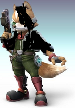
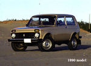
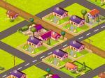
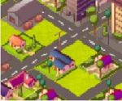

De: La Frikipedia, la enciclopedia extremadamente seria.
De: La Frikipedia, la enciclopedia extremadamente seria. De: La Frikipedia, la enciclopedia extremadamente seria.
Vienbenido, si quieres inscribir tu auto y tu persona, haz clic aquí .
De la serie Videojuegos:
| Desarrollado por: | NFS frikis |
|---|---|
| Distribuido por: | EA friki |
| Diseñado por: | EA friki |
| Motor | 2 giga bytes |
| Género(s) | carrera friki |
| Fecha de lanzamiento: | futuro |
| Modos de juego: | drag y persecución friki, sprint, circuito y otros. |
| Requisitos: | primero pon tu ávatar friki y elige un carro(de lujo). |
| Disponible en: | Espiña |
| Formatos: | Fat42, cabrono, etc. |
| Edades: | 3+ |
| Puntuaciones: | dinero para ganar placas. |
Es un juego de increíble frikismo para cualquier avatar creada en un laboratorio frikipédico con muchos monos amaestrados que les pusieron canciones al juego para no ser estúpidos al jugar. Este juego es así como GTA Frikipedia City. Este juego está dispuesto para todos los frikusuarios si quieren unirse a la carrera callejera, librarse de pelmazos policías y rivalizarse contra Dios.
Eres el mismo
cabrónprotagonista de siempre (Aburrido) el que apareció sin la cara cuando te arrestaron, ese de NFS Most Wanted y NFS cabrón, al seguir culeándote como un mendigo, mejor piensa en algo maravilloso, ¿!ue sería ser el rey y el mejor piloto de carreras callejeras?. Buena pregunta, anda a hacer carreras con tu vehículo de siempre, un BMW M3, pero se rompe cuando te chocas con un camión de leches con vacas durante una persecución policial y ahora tienes que buscar otro carro, 5 años después tienes que competir contra otras ciudades que el dueño (Y al final, el dueño, pero al viaje, te persiguen policías de fpc), despistalos, o salta en una rampa para explotar y abollar a los policías con algo que está en la calle, al ganar todo esto, eres el rey de todo Frikipedia City,¡Qué emoción!, ¡Felicidades! Ahora puedes hacer lo que quieras (Hacer carreras o matar y derrumbar coches de polis para acojonarse de todo).
En todo Frikipedia City, te espía Cross, un pelmazo negro cabrón con su Chevrolet Corvette (De nuevo) que es un policía y apareció en Most Wanted y Cabrono.
En frikipedia city, hay reyes de las calles que pueden vencerte, pero tu compítes con tu vehículo.
| Los Frikipediakings1st | Auto | Descripción. |
|---|---|---|
 Phoenixex Phoenixex |
Lamborghini Murcielago LP640 |
El rey de todas las calles con un Lamborghini Murcielago LP640, te puede vencer con facilidad, aunque es el primero y lo tienes que ganar, es muy fácil. |
|  blinkx | Ford Mustang Shelby |
Uno de los miembros de esta calle que conduce un guapo Ford Mustang Shelby, le gustan los muscles y ha ganado copas, ahora es de los Frikipediakings1st. |
| Sakimakix | Nissan GT-R |
Este entró en Frikipedia Downtown con su copia de deportivo europeo y empezó a arrasar con los dos de arriba. |
| Jamesmayslx |  Lada Niva |
Este piloto Profesional mientras se hacen los test de jerez se fue a Frikipedia City con su Lada Niva que no es comun ,esta altamente tuneado ,tiene el motor v8 de un Renault R26 de Alonso con el chasis de un McLata-Honda MP4/4 ,sistema de traccion total de Bugatti Veyron ,Neumaticos de Nascar ,frenos de Lamborghini Murcielago y Transmision de Williams FW14B. |
| "The Life's Life" con | Auto | Descripción. |
|---|---|---|
| | "Bruno Giacomelli" |  Life L190 |
Una banda formada por Bruno Giacomelli, quien se trajo su esperpentico Life L190 de 1990 a la ciudad para competir. No os desanimeis, le ganareis facilmente, puesto que tiene el peor coche de Fórmula 1 (Si no te lo crees pincha en Life y verás por qué). |
| Los Squadsspider con Spidercerdo Race | Auto | Descripción. |
|---|---|---|
 Roteñito, Alias Mr.Blackb Roteñito, Alias Mr.Blackb |
Mitsubishi EVO Nivel 99 |
Ten mucho cuidado con este |
| Frikicasino | Auto | Descripción. |
|---|---|---|
 Lord Black wizard Lord Black wizard |
Tanque de guerra Sovel Headed Kill Machine X-666 |
El es Lord de un |
| Frikicasino | Auto | Descripción. |
|---|---|---|
| Pentagram Lord | Diaboli Enthrone Abductor |
El mejor corredor del |
| Frikicasino | Auto | Descripción. |
|---|---|---|
 OmegaZero OmegaZero |
 Super Vehicle 001 "Metal Slug" |
Este |
| Lugar | Control. |
|---|---|
| frikipedia downtown Lugar donde controlan los frikipediakings1st. |
| Lugar | Control. |
|---|---|
|  | frikipedia ócean Lugar donde controlan los "The Life's Life" . |
| Lugar | Control. |
|---|---|
 |
frikipedia industrial Lugar donde controlan los squad spiders con los spiderscerdos. |
| Lugar | Control. |
|---|---|
|  | frikipedia casino Lugar donde controlan los frikicasino |
Compite primero con 10 competidores con tu BMW M3, al cabo de estas 10 carreras, te topas con policías que te arrestan al chocarte contra un camión de leches, ahora elige un vehículo nuevo y compíte contra otros. Ahora, lleva a tu vieja a dar un paseo hasta que se muera, ahora tienes que ir a una estación de autobús para abollar personas y destruir los autobuses mientras que te persiguen los policías. Y ahora, están estos capítulos de tu cuadrilla frikipedista.
Los competidores de esa calle deben matar a unas mafias (sin armas)(las mafias tienen autos, son Lotus Elise negros). con autos derrumbándolos y te persiguen, esa misión es para controlar más calles antes que trafiquen todo Frikipedia. Ahora tienes que huir de una persecución policial abollándolos con una rosquilla gigante si lo derrumbas, y escóndete en una ganadería, para ser el jefe.
Competir controlando calles.
El jefe de esa calle es secuestrado por pilotos misteriosos, uno de ellos(tú)Tene que destruir unos Corvette negros, son 10 restantes. Y salvas al jefe, y ahora abollar viejas locas con escopetas y destruir coches policiales durante una persecución.
Competir controlando calles.
Los competidores y tu deben abollar policías, pero tus amigos son capturados y tu jefe de esa calle te dice que derrumbes como legos 20 autos policiales y la cárcel y salvas a todos, aunque te persiguen y no dejaran de buscarte.
Competir controlando calles.
Los gays han vuelto a atacar a Frikipedia City y tu jefe de esa calle te a dicho para que compites contra ellos (los gays llevan ametralladoras mientras compites contra ellos o cuando los persigues), ahora tienes que derrumbar a 5 de ellos que llevan unos Nissans GTR rosados con morado y te persiguen policías por hacer ese caos.
Competir controlando calles.
Escaparse de Cross y derrumbándolo (tiene 100 vidas de daño).
Y esto es el fin.
Existe radios hechos por ea friki trax, ninguno es reggeaton, porque es mierda.
después el programa nu metal en lo mejor de metal:
| |
Friki-artículos | 
|
| 7 Maravillas de Ciudad Frikipedia | Chat de la Frikipedia | Ciudad Frikipedia | Constitución Frikipédica 2005 | Figuras de acción Frikipedistas | Fórmula Galaxy | Frikatski | FrikiCar Series | Frikipedia Online | GTA Frikipedia City | Kick in Eggs Porroductions | Los caballeros que dicen /me | Mitos de la Frikipedia | Need For Speed Frikipedia Race | Orgullo friki de ataques lésbicos | Tormenta de truños | Último teorema de Fermat | ¿Eres un frikiadicto? | ||
| Diálogos del chat de Frikipedia | ||
| Archivo 1 | Archivo 2 | Archivo 3 | Archivo 4 | Archivo 5 | Archivo 6 | Archivo 7 | Archivo 8 | Falsos | ||
| Frikilibros y Guías | ||
| Crónicas del Portal Mantenimiento | Guía frikipedista para ser bloqueado | Guía frikipedista para ser administrador | Guía frikipedista sobre lo que Frikipedia no es | La Armada del foro frikipedístico | ||
Autor(es):